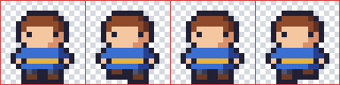

9. アニメーション
ドット絵は 1 枚の絵が小さいので、何枚も描いてアニメーションにしやすい。この章では、アニメーションの基本となるフレームとタイミングの考え方、歩行アニメーションの作り方、ゲームで使うためのスプライトシートについて説明する。
9.1. フレームとタイミング
アニメーションは、少しずつ異なる絵を順番に切り替えて表示することで、動いているように見せるものである。1 枚 1 枚の絵をフレームと呼ぶ。
アニメーションの印象は、フレームの枚数と、各フレームを表示する時間（タイミング）で決まる。ゲームの画面は 1 秒間に 30 回や 60 回書き換えるのが普通だが、ドット絵のアニメーションをそれと同じ速さで切り替える必要は無い。たとえば 30 fps（1 秒に 30 回の書き換え）のゲームで、5 回の書き換えごとにフレームを切り替えれば、1 フレームあたり約 167 ミリ秒、1 秒あたり 6 フレームのアニメーションになる。16×16 ピクセル程度のキャラクターの歩行なら、1 フレームあたり 100 ミリ秒から 200 ミリ秒程度がよく使われる。
すべてのフレームを同じ時間だけ表示する必要も無い。動きの頂点や、溜めの姿勢のフレームを長めに表示すると、動きに強弱が付く。
9.2. 歩行アニメーション
主人公の歩行アニメーションを 図 9.1 に示す。
図 9.1 歩行アニメーションの 4 フレーム。左から、直立、左足を上げる、直立、右足を上げる。
この 4 フレームを左から順に繰り返し表示する。1 フレーム目と 3 フレーム目は同じ絵である。同じ絵を使い回すと、描く枚数を減らせる。変えているのは脚の部分だけで、上げた足は 1 ピクセル上にずらしている。
16×16 ピクセルのキャラクターでは、動かせるピクセルの数が限られる。数ピクセルの違いでも動きは十分に伝わるので、最初はこのように変化の少ないアニメーションから始めるとよい。慣れてきたら、腕を振る、体を上下に揺らすなどの変化を加える。
タイミングの違いを確認するため、同じ 4 フレームを異なる速さで再生した GIF アニメーションを次に示す。
80 ミリ秒 |
150 ミリ秒 |
300 ミリ秒 |
|---|---|---|
80 ミリ秒では急いで走っているように、300 ミリ秒ではゆっくり足踏みしているように見える。このように、同じ絵でもタイミングだけで印象が変わる。
アニメーションを描くときは、エディタのオニオンスキン（前後のフレームを半透明で重ねて表示する機能）を使い、前のフレームとの違いを確認しながら描くとよい。
9.3. スプライトシート
ゲームでは、アニメーションの各フレームを別々のファイルにせず、1 枚の画像にまとめて扱うことが多い。この画像をスプライトシートと呼ぶ。

図 9.2 歩行アニメーションのスプライトシート（6 倍）。赤い線は各フレームの区切りを示すためのもので、実際の画像には含まれない。
スプライトシートにまとめると、ファイルの管理が楽になり、読み込みも 1 回で済む。各フレームの大きさをそろえ、決まった順に並べておけば、プログラムからは「何番目のフレームか」だけでフレームの位置を計算できる。
sprite_sheet.py は、フレームを並べてスプライトシートを作り、それを再び切り出して GIF アニメーションとして保存する。スプライトシートを作る関数と切り出す関数を次に示す。
20def make_sheet(frames: list[Image.Image], columns: int) -> Image.Image:
21 """同じ大きさのフレームを columns 列で並べたスプライトシートを作る。"""
22 width, height = frames[0].size
23 rows = (len(frames) + columns - 1) // columns
24 sheet = Image.new("RGBA", (width * columns, height * rows), (0, 0, 0, 0))
25 for index, frame in enumerate(frames):
26 if frame.size != (width, height):
27 raise ValueError("すべてのフレームを同じ大きさにする")
28 sheet.paste(frame, ((index % columns) * width, (index // columns) * height))
29 return sheet
32def split_sheet(sheet: Image.Image, width: int, height: int) -> list[Image.Image]:
33 """スプライトシートを左上から右へ、上から下へ順に切り出す。"""
34 frames: list[Image.Image] = []
35 for top in range(0, sheet.height, height):
36 for left in range(0, sheet.width, width):
37 frames.append(sheet.crop((left, top, left + width, top + height)))
38 return frames
columns 列で並べる場合、\(i\) 番目（0 から数える）のフレームは、左から \(i \bmod \mathit{columns}\) 番目、上から \(\lfloor i / \mathit{columns} \rfloor\) 番目の位置に置かれる。
GIF 形式は半透明を扱えないため、save_gif 関数では、透明な部分を背景色で塗りつぶしてから保存している。
1python sprite_sheet.py --duration 150
実行すると、output/hero_walk_sheet.png と output/hero_walk.gif が保存される。
9.4. Pyxel で再生する
作ったスプライトシートを、Pyxel を使ってゲームの画面に表示してみる。pyxel_walk.py は、スプライトシートを読み込み、歩行アニメーションと、スプライトシート全体を表示する。
1"""スプライトシートを Pyxel で読み込み、歩行アニメーションを再生する。
2
3先に sprite_sheet.py を実行して output/hero_walk_sheet.png を作っておくこと。
4Esc キーで終了する。
5
6使い方::
7
8 python sprite_sheet.py
9 python pyxel_walk.py
10"""
11
12from pathlib import Path
13
14import pyxel
15
16SHEET_PATH = Path("output/hero_walk_sheet.png")
17FRAME_SIZE = 16 # 1 フレームの幅と高さ（ピクセル）
18FRAME_COUNT = 4 # フレーム数
19FRAME_TICKS = 5 # 1 フレームを表示する期間（30 fps なので 5 / 30 秒）
20BACKGROUND = 0xE8ECF0
21
22
23class App:
24 def __init__(self) -> None:
25 pyxel.init(64, 40, title="Walk", fps=30)
26 # include_colors=True にすると、画像の色がそのまま Pyxel のパレットになる。
27 # 透明ピクセルはパレットの 0 番（黒）になるので、描画時に colkey=0 で透過させる。
28 self.sheet = pyxel.Image.from_image(str(SHEET_PATH), include_colors=True)
29 pyxel.colors.append(BACKGROUND)
30 self.background = len(pyxel.colors) - 1
31 pyxel.run(self.update, self.draw)
32
33 def update(self) -> None:
34 pass
35
36 def draw(self) -> None:
37 pyxel.cls(self.background)
38 frame = (pyxel.frame_count // FRAME_TICKS) % FRAME_COUNT
39 # 上段：アニメーション、下段：スプライトシート全体
40 pyxel.blt(24, 2, self.sheet, frame * FRAME_SIZE, 0, FRAME_SIZE, FRAME_SIZE, colkey=0)
41 pyxel.blt(0, 22, self.sheet, 0, 0, FRAME_SIZE * FRAME_COUNT, FRAME_SIZE, colkey=0)
42
43
44def main() -> None:
45 if not SHEET_PATH.exists():
46 raise SystemExit(f"{SHEET_PATH} が無い。先に sprite_sheet.py を実行すること。")
47 App()
48
49
50if __name__ == "__main__":
51 main()
Pyxel では、画面の書き換えのたびに update と draw が呼ばれる。draw の中で、経過したフレーム数 pyxel.frame_count を FRAME_TICKS で割り、さらにフレーム数で割った余りを求めると、表示するフレームの番号になる。pyxel.blt は、画像の一部（ここではスプライトシートの中の 1 フレーム）を画面に描く関数である。
Pyxel は、パレットの番号で色を扱う。Image.from_image に include_colors=True を指定すると、画像に含まれる色がパレットとして読み込まれる。透明なピクセルは 0 番の色になるので、blt の colkey に 0 を指定して透過させている。背景色はパレットに無いため、pyxel.colors に追加して使っている。
次のように実行すると、ウィンドウが開いてアニメーションが再生される。Esc キーで終了する。
1python sprite_sheet.py
2python pyxel_walk.py